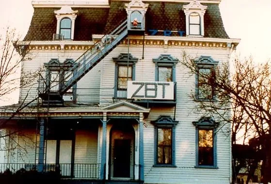
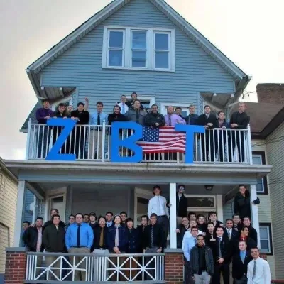
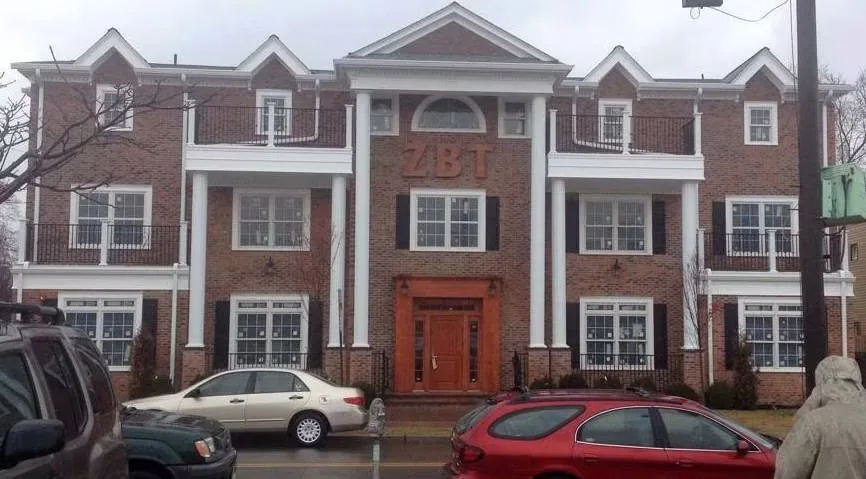
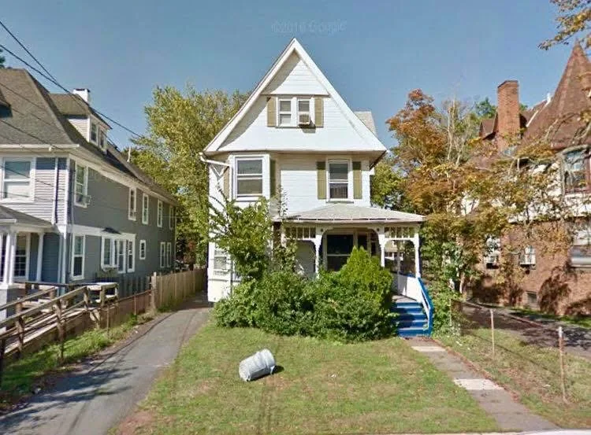
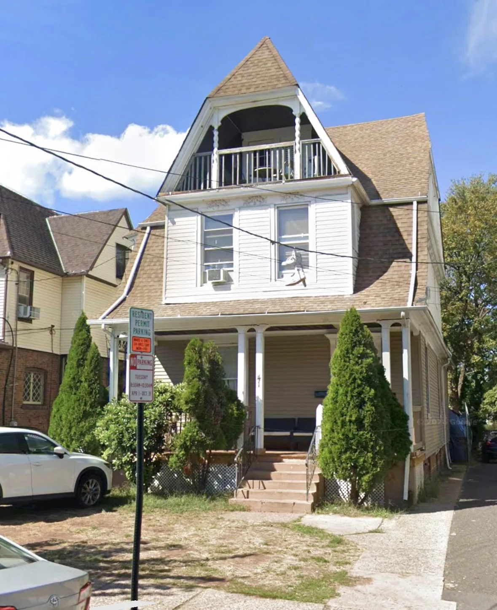

1949–1990s
26 Union Street
The historic home of Beta Delta for nearly five decades and a defining symbol for generations of brothers.

Nearly eight decades of chapter life
The verified homes that have shaped generations of Beta Delta brothers at Rutgers.
More Than an Address
Each Beta Delta home represents a different era of the chapter. These houses served as settings for meetings, recruitment, study, alumni visits and the everyday moments that built lifelong relationships.
This timeline includes only the verified official chapter houses discussed and documented by the chapter.

1949–1990s
The historic home of Beta Delta for nearly five decades and a defining symbol for generations of brothers.

2000s–Early 2010s
The chapter’s home during the 2000s and early 2010s, before the move to Sicard Street.

2014–2016
A modern chapter house that marked a new period in Beta Delta’s campus presence.

2017–2020
Home to the chapter during a period of continued growth, recruitment and campus involvement.

2020–2026
The chapter’s home through the early 2020s and the years leading to 106 College Avenue.

2026–Present
The current home of Beta Delta and the center of the chapter’s newest era.
Explore the current home